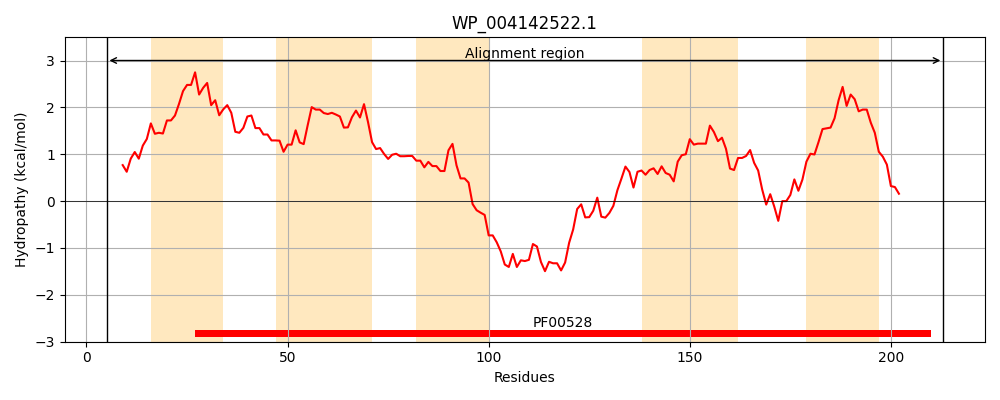
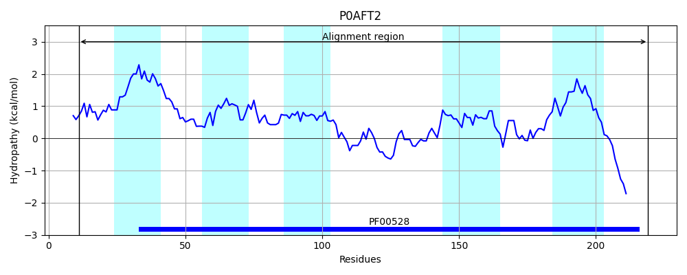
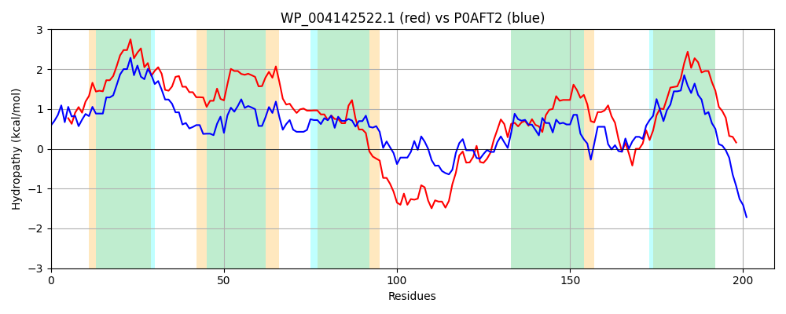

Hit Accession: P0AFT2
Hit TCID: 3.A.1.3.10
Hit Description: gnl|BL_ORD_ID|8840 gnl|TC-DB|P0AFT2|3.A.1.3.10 Inner membrane amino-acid ABC transporter permease protein yecS - Escherichia coli.
Mach Len: 209
e:0.000000
Query TMS Count : 5
Hit TMS Count: 5
TMS-Overlap Score: 4.600000
Predicted Substrates:CHEBI:2247;7,8-diaminononanoic acid, CHEBI:4052;cystine
BLAST Alignment:
Score: 297 , Bit scores: 119 bits, E-value: 2.1e-33, Alignment length: 209, Percentage identity: 36
Query: 5 SWQLLIEGAWTTLWISAIAIAFGVVAGLLIALVRMLRLPVIDQLLVVYISLARATPLVTLVLFLFLSLPTMGINLDKNVAAIVALTLNTSAFNAEIWRNAFRTFPREQREAAESVGMRRWTYFRYIMLPQMWIESLPALVNEMSFLIKGSPAIAVIGVVDLTRVTNRISSVTYEPLSPILAAGLLYVVIIGCLLKLQGIAERKARRLAR 213
S L++GA TL +S + FG++ G ++AL+R+ + + L YIS+ R TPL+ + ++ LP GI LD +A++ L+LNT+A+ AE R A + + Q EAA S+GM W R +LPQ +LP L N L+K + A I V +L R I+S T E + LAA L+Y ++ L LQ E + R R
Sbjct: 11 SLPFLLKGAGYTLQLSIGGMFFGLLLGFILALMRLSPIWPVRWLARFYISIFRGTPLIAQLFMIYYGLPQFGIELDPIPSAMIGLSLNTAAYAAETLRAAISSIDKGQWEAAASIGMTPWQTMRRAILPQAARVALPPLSNSFISLVKDTSLAATIQVPELFRQAQLITSRTLEVFTMYLAASLIYWIMATVLSTLQNHFENQLNRQER 219 | Protein Hydropathy Plots: |
|---|
|  |  |
Pairwise Alignment-Hydropathy Plot:
|
|---|
|  |